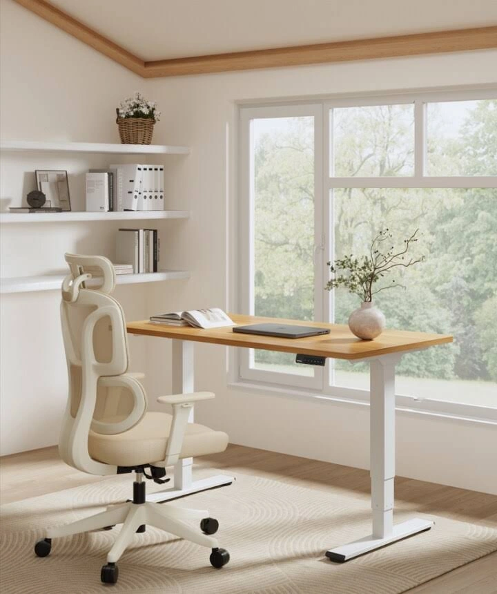

FW-C01 · 120厘米也有独立工作区
修订顺序：2 / 24 · P0 · 优先获客测试。顺序为策划测试安排，尚非素材效果排名。
产品：Economy Solid 白色 120×60 cm。
用户：住小户型的混合办公者。
需求：不占满卧室，也能保留电脑工作和起身空间。
卖点：120×60尺寸与电动坐站切换。
机会类型：三：新使用场景。
参考什么：借鉴床与桌同时入镜的空间关系，而非复刻床品或四脚结构。
为什么：小空间需求由小尺寸在售产品支持；德国居家办公有明确统计背景，具体房型是测试假设。
如何差异化：使用白色两脚实物；让门框与通道提供尺度，画面不以绿植作为主装饰。
场景：约9平方米的卧室边缘，桌子靠短墙；门开启后仍有现实通路，床与衣柜不挡升降范围。
构图：从门口斜向拍摄，桌占右侧约一半，左侧保留完整通道；加一张小平面示意只标120×60。渠道改版：PMax版只保留真实房间单幅画面，移除小平面图；尺寸信息放广告文字。
人物及动作：约30岁远程职员坐姿整理一页任务清单；椅子和膝部空间可见。
渠道：Meta Feed主方案；Google PMax需另做干净单幅版本。比例：4:5、1:1；另构图适配1.91:1。德语主题：Dein Arbeitsplatz auf 120 × 60 cm。
资格依据：一体桌板；单电机；两组记忆高度；白桌白架；规格区承重70 kg；高度73–118 cm不含桌板。
不能添加的宣称：描述段噪声<50 dB与规格≤55 dB不一致，创意不引用分贝；不要混用Economy拼接板。
证据边界：有A类实际图片参考；具体原创场景和转化效果尚待测试。图片参考体现视觉方法，不构成竞品效果数据。需求证据：N1+P1；房型与购买意图强弱尚未验证。
参考原图
 FLEX-GOOG-012
FLEX-GOOG-012FLEX-GOOG-012 · FlexiSpot · Google · 真实广告内的图像组件（非完整广告版式）
原广告来源。详情日期与德国地区已核验。

FLEX-GOOG-096FLEX-GOOG-096 · FlexiSpot · Google · 真实广告内的图像组件（非完整广告版式）
原广告来源。详情日期与德国地区已核验。